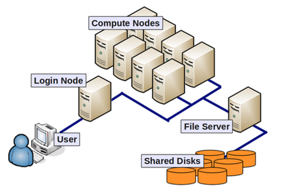
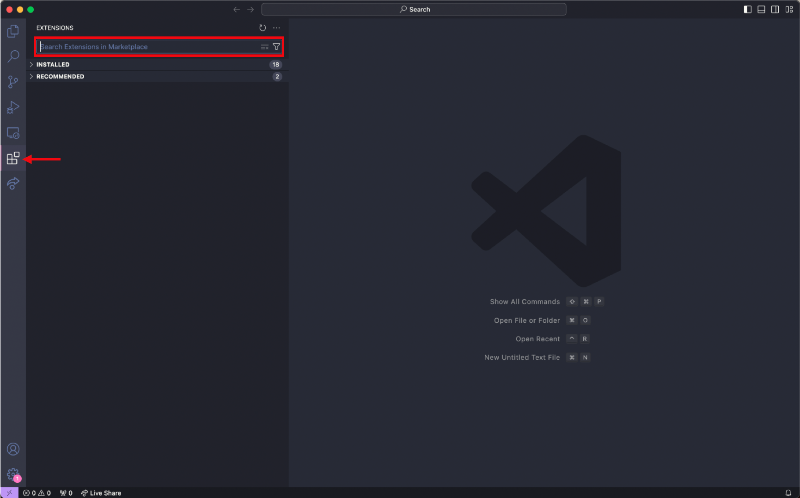
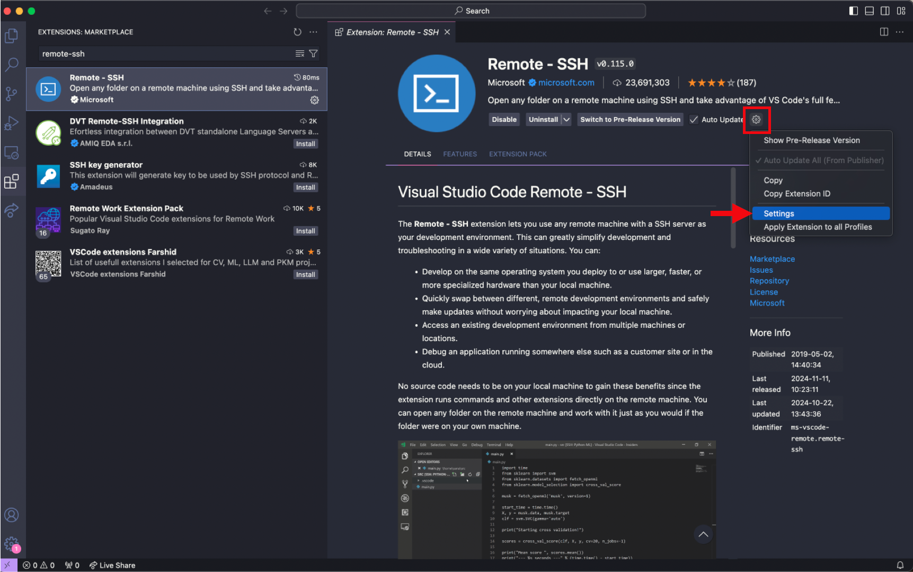
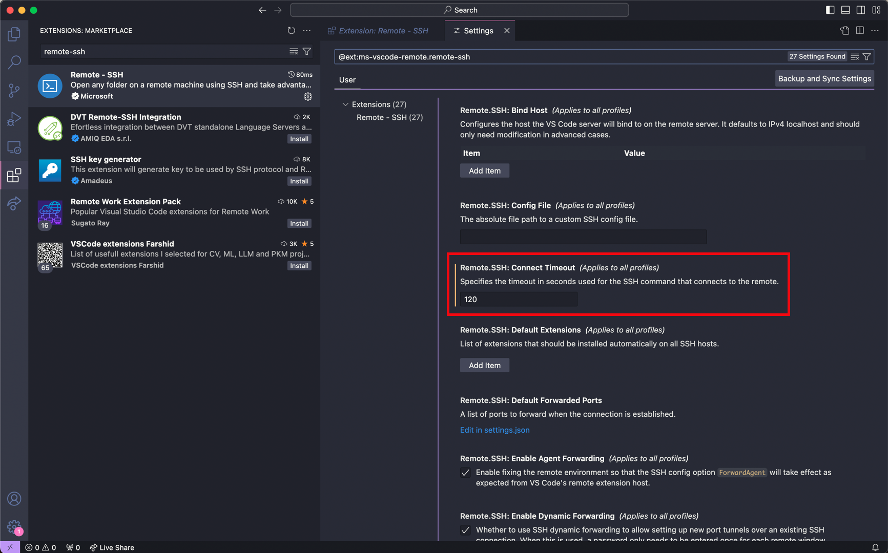
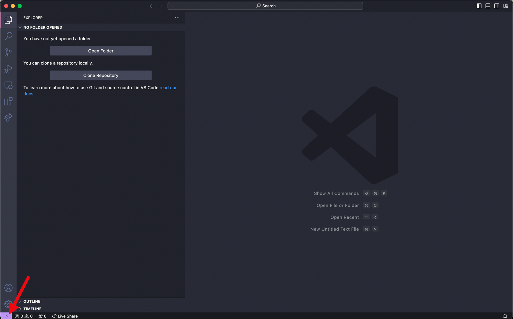

srun --pty -p priority -t 12:0:0 --mem=8G -c 1 bashInstallation instructions
Instructions for installing various package managers and pipelines
Compute node
By default upon logging into O2, each user is placed on a login node. Login nodes are NOT suitable for supporting intensive computational processes. Intensive analyses on the login mode will be automatically terminated by O2 and users may be flagged by the admin if this occurs consistently. Please be sure to request a compute node to execute any tasks. For additional details about compute nodes, please reference the O2 documentation.

This command requests a compute node for 12 hours, with 8GB of memory and 1 core. Compute nodes automatically terminate when you disconnect from the O2 cluster or when the time limit is met, whichever occurs first.
mamba/minimamba
Executing bioinformatics analyses often involve installing multiple packages/tools. Mamba is a package manager that allows users to create environments. Environments separate these package installations into individual “partitions”, which helps 1) prevent users from disrupting their own base environment with the installations of these new packages, 2) facilitate easy access and removal of packages and 3) manage/create environments individually for each pipeline or type of analysis.
Install mamba on O2 terminal:
cd ~;
curl -L -O "https://github.com/conda-forge/miniforge/releases/latest/download/Mambaforge-$(uname)-$(uname -m).sh";
bash Mambaforge-$(uname)-$(uname -m).sh;Initialize mamba on O2 terminal before usage (first time only):
mamba init
# close terminal and reopen
source ~/.bashrcSnakemake
Snakemake is a package that helps structure and streamline code writing for bioinformatics pipelines, which is particularly useful for complicated pipelines that involve multiple steps and a huge number of files. Create your first conda environment named snakemake_8_20_3 with the snakemake package installed with the following command.
To read more about snakemake, please refer to the official Snakemake documentation.
Install snakemake on O2 terminal:
mamba create -n snakemake_8_20_3 -c conda-forge -c bioconda snakemake=8.20.3 snakemake-executor-plugin-slurm snakemake-executor-plugin-slurm-jobstepTo use snakemake, activate this environment maintained by mamba:
mamba activate snakemake_8_20_3VSCode
VSCode is a code text editor application that provides an easy-to-use interface for viewing and writing code/scripts. This section will detail how to 1) install VSCode as an application on your computer, 2) install VSCode extensions and 3) setup launching VSCode as an interface to view and edit your files on the O2 cluster.
Install VSCode application
To install VSCode on your computer, use this link.
Install VSCode extensions
VSCode has a number of extensions that allow each user to customize their own coding experience. We recommend the installation of three extensions:
Rainbow CSV- identifies “,” as the separator in CSV files, highlights each column with a different colorVSCode-pdf- view PDF files directly within the VSCode interfaceRemote-SSH- allows users to login and access their own HPC cluster and view their files through the VSCode interface (see next section)
To install extensions:
Navigate to the toolbar on the far left of the VSCode interface and click on the icon that resembles four squares.
Use the search bar that has the caption “Search Extensions in Marketplace” to find extensions that you like and install each of them individually.
An additional step for
Remote-SSHinstallation involves changing the connect timeout setting. As O2 login requires Duo authentication, there is often a slight delay and more time is needed to complete the authentication and login properly. To adjust this, please follow steps 4-6.Navigate to the extension page for
Remote-SSH(on the toolbar on the far left, select the icon with four squares, then input remote-ssh into the search bar) 
Select the gear button and press Settings 
Input 120 seconds for the
Remote.SSH: Connect Timeoutparameter 
Setup O2 access with VSCode: Launch VSCode on O2 login node
While logging into O2 on the terminal only provides a command-line interface and linux commands are needed to modify files, the main advantage of accessing O2 through VSCode is it allows users to easily view and edit their files in an interactive manner within the VSCode application.
After installation of VSCode and the Remote-SSH extension, establish a SSH connection to O2 through VSCode:
Press the bottom left purple icon to ‘Open a Remote Window’. This will prompt a few options to be displayed at the top near the search bar 
Select ‘Add New SSH Host’ and then input the following and enter
<hms_id>@o2.hms.harvard.edu- Select
<path to config>/.ssh/configas the SSH configuration file to update - Input password for O2 login
- Complete Duo authentication
- Login complete (Note: login may take longer at the first instance because VSCode will download its own server.)
After setup, directly click the bottom left purple icon each time and input login credentials to launch O2 on VSCode each time.
Setup O2 access with VSCode: Launch VSCode on O2 compute node
After setting up VSCode, Remote-SSH extension and establishing a connection to O2 login node through VSCode, follow these steps to launch VSCode on a compute node in O2. This is useful if you plan to use VSCode to open or edit larger files as this may be a process that is too computationally intensive for login nodes to handle, leading the O2 cluster to automatically terminate your connection to O2 through VSCode. For a more detailed description, please refer to the official O2 documentation on VSCode, which was used as a reference for this section.
- Generate SSH key on your own computer’s terminal with the following command. When prompted for file name, press enter to use the default file name. Enter a passphrase to protect your SSH keys.
# input this line into your computer's terminal
ssh-keygen -t rsa
# sample output (See O2 documentation for reference)
Generating public/private rsa key pair.
Enter file in which to save the key (/USERHOME/.ssh/id_rsa):
Enter passphrase (empty for no passphrase):
Enter same passphrase again:
Your identification has been saved in /USERHOME/.ssh/id_rsa.
Your public key has been saved in /USERHOME/.ssh/id_rsa.pub.
The key fingerprint is:
a5:b5:38:73:b7:3c:a6:8a:1d:a8:bd:87:4e:be:33:21 - Copy your computer’s SSH public key onto the O2 SSH authorized_keys file, which allows your computer and O2 to recognize each other
- Linux or Mac:
# input this line into your computer's terminal
ssh-copy-id -i $HOME/.ssh/id_rsa.pub <hms_id>@o2.hms.harvard.edu
# input O2 password and complete Duo authentication- Windows:
# input this line into your computer's terminal
Get-Content "$env:USERPROFILE\.ssh\id_rsa.pub" | ssh <hms_id>@o2.hms.harvard.edu "mkdir -p ~/.ssh && cat >> ~/.ssh/authorized_keys"
# input O2 password and complete Duo authentication- Add new lines in your computer’s SSH config file. Replace HMS ID with your own ID. After modification, use
Ctrl + Xfollowed by enter to save the file.
# input this line into your computer's terminal
# open your computer's SSH config file
nano ~/.ssh/config
#for Windows systems use
notepad $env:USERPROFILE\.ssh\config
# copy and paste the following lines into the config file
Host o2jump
HostName o2.hms.harvard.edu
User <hms_id>
ForwardAgent yes
ForwardX11 yes
ForwardX11Trusted yes
Host o2job
HostName compute_node_of_job
User <hms_id>
ProxyJump o2jump
ForwardAgent yes- Request a compute node on O2, update your local config file with the node information for VSCode with the following command. Please use the command appropriate for your operating system, as the syntax varies slightly. Your requested compute node will be allocated with a 1 hour runtime, 4GB memory and 1 core.
- Linux:
# input this line into your computer's terminal
ssh <hms_id>@o2.hms.harvard.edu "/n/groups/kwon/joseph/submit_o2.sh" | tail -n 1 | xargs -I {} sed -i "/^Host o2job$/,/^\s*Host /{s/^\(\s*HostName\s*\).*$/\1{}/}" ~/.ssh/config- Mac:
# input this line into your computer's terminal
ssh <hms_id>@o2.hms.harvard.edu "/n/groups/kwon/joseph/submit_o2.sh" | tail -n 1 | xargs -I {} | xargs -I NODE_HOSTNAME sed -i '' "/^Host o2job$/,/^[[:space:]]*Host / s/^\([[:space:]]*HostName[[:space:]]*\).*/\1NODE_HOSTNAME/" ~/.ssh/config- Windows:
# input this line into your computer's terminal
$nodeHostname = (ssh <hms_id>@o2.hms.harvard.edu "/n/groups/kwon/joseph/submit_o2.sh" | Select-Object -Last 1); (Get-Content "$env:USERPROFILE\.ssh\config") | ForEach-Object { if ($_ -match 'Host o2job') { $_; $foundJob = $true } elseif ($foundJob -and $_ -match '^\s*HostName\s+') { $foundJob = $false; $_ -replace '(?<=HostName\s*)\S+', $nodeHostname } else { $_ } } | Set-Content "$env:USERPROFILE\.ssh\config"- Open VSCode, select the bottom left purple icon to launch the remote connection. Select ‘Connect to Host’ and
o2jobas the server. Proceed by inputting O2 login password and completing Duo authentication. Select ‘Continue’ to proceed.
Setup for launching VSCode on a O2 compute node is now complete. After setup, it is only necessary to execute Steps 4-5 each time to launch this.